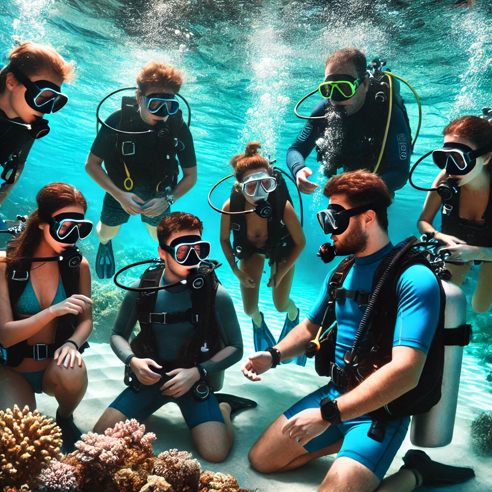

Pasja, która łączy przygodę z naturą
Nurkowanie to nie tylko przygoda, ale także sposób na połączenie się z naturą i zrozumienie delikatnego ekosystemu oceanów. Każdy nurek ma szansę zbliżyć się do fascynujących stworzeń, takich jak żółwie morskie, delfiny czy kolorowe ryby raf koralowych.
Jak zacząć nurkowanie?
Nurkowanie wymaga odpowiedniego przygotowania i wiedzy. Na początek warto ukończyć kursy certyfikacyjne, takie jak PADI (Professional Association of Diving Instructors), które wprowadzają w podstawy nurkowania, zasady bezpieczeństwa oraz techniki oddychania pod wodą.
Podstawowe kursy takie jak PADI Open Water Diver pozwalają na bezpieczne nurkowanie do 18 metrów głębokości. Kolejnym krokiem może być zdobywanie dodatkowych umiejętności, takich jak nurkowanie na większe głębokości, nocne nurkowanie czy nurkowanie wrakowe.
Niezbędny sprzęt do nurkowania
Nurkowanie wymaga odpowiedniego sprzętu, który zapewni komfort i bezpieczeństwo pod wodą. Oto kilka podstawowych elementów, bez których nie można się obejść:
- Maska nurkowa – umożliwia widzenie pod wodą, a jej dobrze dopasowanie to klucz do komfortu.
- Płetwy – pozwalają na efektywne poruszanie się pod wodą z minimalnym wysiłkiem.
- Butla z tlenem – źródło tlenu pod wodą, które pozwala oddychać na większych głębokościach.
- Kombinezon nurkowy – zapewnia ciepło i ochronę przed zimną wodą oraz ewentualnymi urazami.
- Komputer nurkowy – nowoczesne urządzenie, które monitoruje głębokość, czas nurkowania i ilość pozostałego tlenu.

Bezpieczeństwo podczas nurkowania
Nurkowanie to niezwykła przygoda, ale jak każdy sport wodny, wiąże się z pewnymi ryzykami. Aby nurkować bezpiecznie, warto przestrzegać kilku zasad:
- Zawsze nurkuj z partnerem – w razie problemów łatwiej jest liczyć na pomoc drugiej osoby.
- Przestrzegaj limitów głębokości – nurkuj tylko do głębokości, na którą masz uprawnienia i doświadczenie.
- Monitoruj czas nurkowania i ilość tlenu – komputer nurkowy pomoże Ci w kontrolowaniu czasu i zużycia powietrza.
- Unikaj wynurzania się zbyt szybko – nagłe wynurzenie może spowodować chorobę dekompresyjną.